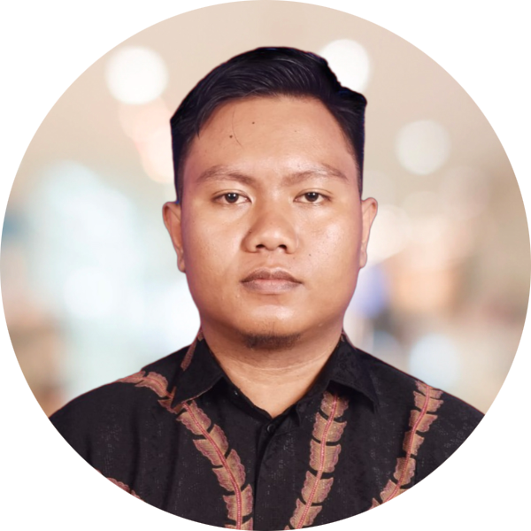

Saya adalah seorang mahasiswa Informatika di Universitas Siber Asia dengan fokus pada desain dan pemasaran digital. Tujuan karir saya adalah menjadi seorang desainer grafis yang ahli dalam digital marketing dan media sosial. Saya memiliki keahlian dalam merancang visual yang menarik dan memahami strategi pemasaran online, iklan digital, serta manajemen media sosial.
Saya berkomitmen untuk menggabungkan keterampilan desain grafis dan pemasaran digital ini untuk membantu perusahaan mencapai tujuan pemasaran mereka. Dengan kombinasi keterampilan ini, saya berharap dapat memberikan kontribusi yang berharga dalam menciptakan kampanye pemasaran yang efektif dan berdampak positif bagi perusahaan yang saya tuju.
Aceh, Maret 2022-Sekarang
Brand Konsultan & Marketing
Bertanggung jawab dalam :
Bogor, April 2022- Sekarang
Kepala Marketing Regional Sumatra
Bertanggung jawab dalam :
| Instansi | Jurusan | Tempat | Tahun |
| Universitas Siber Asia | S1 Informatika | Jakarta Selatan | 2023 - Sekarang |
| Eduwork | Program Kursus Singkat UI/UX Designer | Yogyakarta | 2023 |
| SMA Negeri 12 | Matematika & Ilmu Pengetahuan Alam | Banda Aceh | 2015 - 2018 |
| Jenis Sertifikasi | Lembaga Penerbit | Tahun |
| Content Creator | Badan Nasional Sertifikasi Profesi | 2023 |
| Social Media Specialist | Kementerian Ketenagakerjaan | 2023 |
| Basic Adobe Illustrator | Pintaar.id | 2023 |
Mari Mengenal Lebih Jauh :